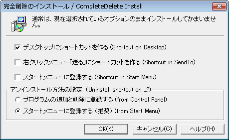

| インストール |
|
| インストール |
|
配布されたプログラム・パッケージを、適当なフォルダにコピーする。（新たにフォルダを作ることを薦めます。アンインストールに便利です。）
CompDel.exeを初めて実行すると、自動的にインストーラが起動します。

 通常はＯＮ
通常はＯＮ
デスクトップに「完全削除」のショートカットを作り、Explorerなどからのドラッグ・アンド・ドロップによって利用できるようにします。
 通常はOFF
通常はOFF
Explorer
で、ファイルを選択後、「右クリック」して出てくるコンテキストメニューの「送る」に登録します。
 通常はOFF
通常はOFF
スタートメニューにショートカットを作ります。（機能設定に利用するため）
 通常はOFF
通常はOFF
コントロールパネルの「プログラムの追加と削除」（Windowsのバージョンによっては
 通常はON
通常はON
スタートメニューにショートカットを作ります。
あとから、機能設定ダイアログでスタートメニューにアンインストールメニューを作成することもできます。
旧バージョンをアンインストールしてから、本プログラムをインストールしてください。
エクスプローラで削除したいファイル(複数可)を選択し、｢完全削除｣アイコンにドラッグ＆ドロップする。または、右クリック･メニューの｢送る｣を実行
完全削除の方法関する詳細情報はこちらをご覧ください。
なお、複数ファイルを選択してドラッグ＆ドロップした場合、エラーとなるときがあります。これは、CompDel.exeプログラムに引き渡すことのできるコマンド文字列に制限があるためです。選択するファイル数を減らしてもう一度ためしてください。 → 詳細はエラーと対処方法へ